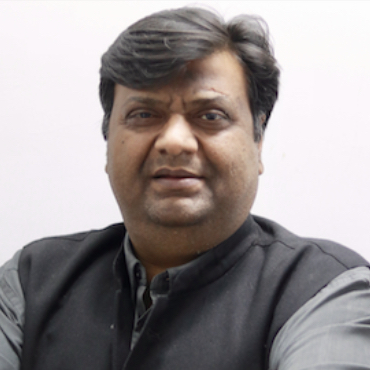
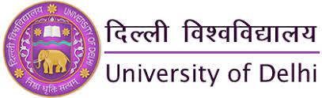
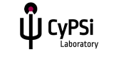

About IIC
The Institute of Informatics and Communication, University of Delhi, has evolved into one of the country's premier institutions since 1997. It targets fulfilling the increasing demand for trained professionals in the Industry. It has been designed by leading academics in the world of computing as well as communication. Today, the most recognized need in the world of industry and corporate environment is for an informatics professional who understands not only computing and telecommunication technology but also related software application. The institute, in its nurturing environment, gives birth to and nourishes the mind that goes on to innovate in the field of communications and information technology.
Programmes@ IIC

Masters of Science (Informatics) at the University of Delhi is the space where networking, telecommunication, and software collate to enable its students to cater to the growing demands of the industry and to merge as IICians with a brand mark of their own. The focus is on imparting relevant theoretical knowledge and practical skills in the global context. Students are admitted to the institute through a national-level entrance test followed by group discussions as well as personal interviews with a panel of experts. Click here to know more about MSc(Informatics).
PhD
Ph.D. at the Institute of Informatics and Communication focuses on providing interdisciplinary
research opportunities in the field of your specialization inorder to solve research problems of
domains intersecting with informatics. Ph.D. programs at IIC leverage holistic development of
Research Scholars and encourage them to serve the society by contributing to the research areas
they are passionate about.
Current researchers at IIC are working on recent and relevant research domains such as Cyber
Physical Systems and Deep Learning. Click here to know more
about PhD at IIC.
Faculty@ IIC

Dr. Sanjeev Singh
Professor
Institute of Informatics and Communication
IIC,South Campus,University of Delhi

